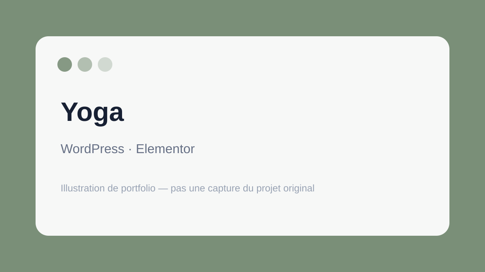

WordPress / Elementor
Site Yoga
Création et intégration d'un site WordPress avec travail sur les pages, le contenu et le responsive.
Voir le projet →Portfolio
Voici une sélection de projets réalisés en formation et en environnement professionnel. Ce portfolio met en avant mon approche technique, ma capacité d'apprentissage et mon expérience sur des projets web variés.
Sélection
Quatre projets représentatifs de mon parcours en développement web.

WordPress / Elementor
Création et intégration d'un site WordPress avec travail sur les pages, le contenu et le responsive.
Voir le projet →
PHP / Bootstrap
Développement d'un site multi-pages en PHP avec une interface responsive réalisée avec Bootstrap.
Voir le projet →
JavaScript / AJAX
Récupération et affichage dynamique de données météo avec JavaScript, AJAX et JSON.
Voir le projet →
Expérience professionnelle
Travail sur une application Laravel existante : backend, base de données, vues Blade et résolution de problèmes.
Voir le projet →Stack
HTML, CSS, SCSS, Bootstrap, JavaScript, jQuery, responsive design.
PHP, bases de Laravel, logique applicative, formulaires et contenu dynamique.
MySQL / MariaDB, manipulation et affichage de données, JSON, AJAX.
WordPress, Elementor, Git / GitHub, environnement de développement local.
À propos
J'ai suivi une formation en développement web qui m'a permis de travailler aussi bien sur l'intégration frontend que sur le backend, notamment avec PHP, WordPress, JavaScript et les bases de données.
J'ai également eu l'occasion de travailler sur une application existante dans un environnement professionnel, ce qui m'a permis de découvrir les contraintes d'un projet réel : comprendre un code déjà en place, manipuler des données, corriger des problèmes et adapter des fonctionnalités.
Contact
Cette section est volontairement laissée simple. Ajoute ici ton adresse e-mail, ton profil LinkedIn et ton GitHub lorsque tu souhaiteras publier le portfolio.
À compléter : e-mail · LinkedIn · GitHub